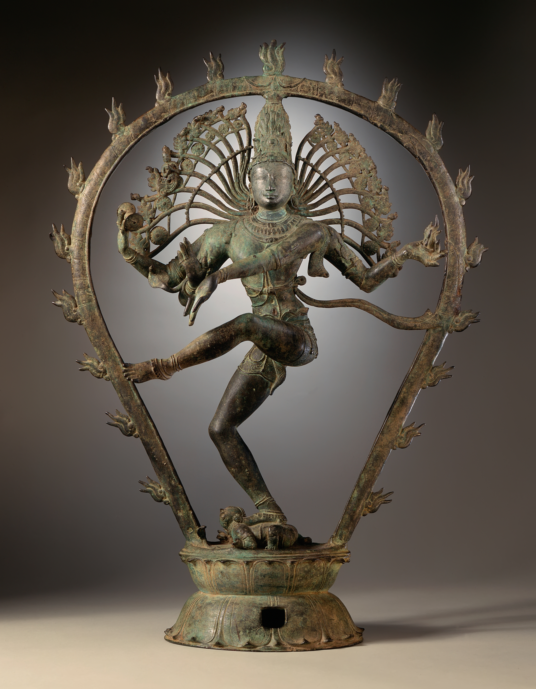
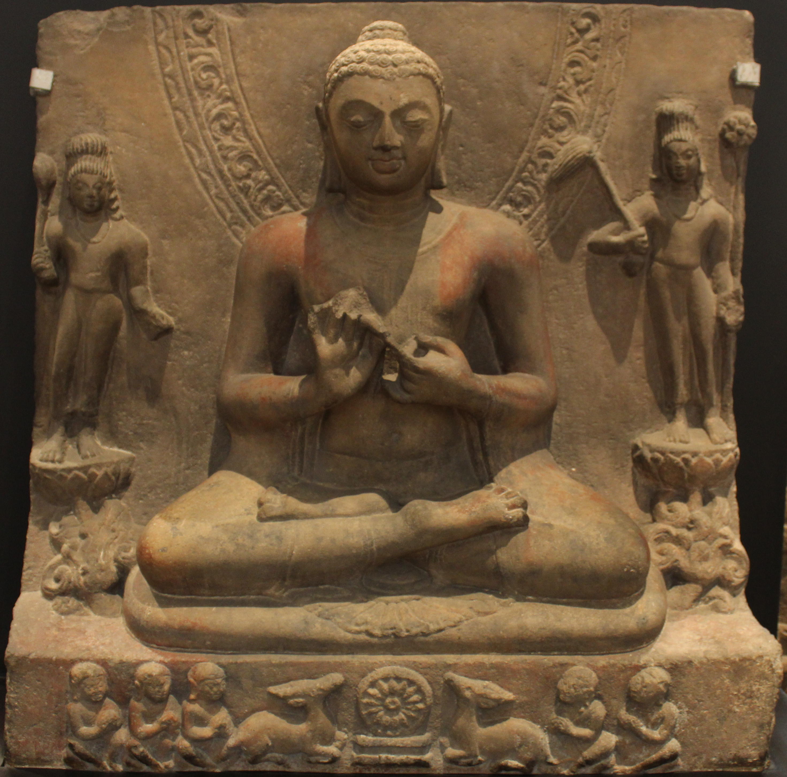
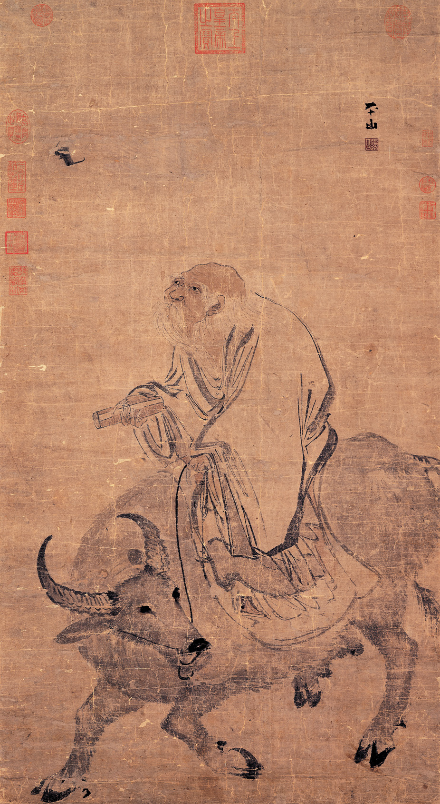

1. Εισαγωγή: Η Ινδική Υποήπειρος ως Ξεχωριστός Πλανήτης
Η ινδική υποήπειρος δεν είναι απλώς μια γεωγραφική περιοχή· αποτελεί έναν ολόκληρο πλανήτη μέσα στον πλανήτη. Προστατευμένη στα βόρεια από την ανυπέρβλητη γρανιτένια οροσειρά των Ιμαλαΐων και αγκαλιασμένη από τον απέραντο Ινδικό Ωκεανό, διαμόρφωσε έναν από τους πιο αρχέγονους, συνεκτικούς και πνευματικά αδιάλειπτους πολιτισμούς της ανθρωπότητας.
Εδώ, σε αντίθεση με τη δυτική ιστορία όπου οι αρχαίοι πολιτισμοί (Αίγυπτος, Μεσοποταμία, κλασική αρχαιότητα) διακόπηκαν ή μετασχηματίστηκαν ριζικά, το παρελθόν δεν πέθανε ποτέ. Τελετές που συνελήφθησαν στις όχθες του Γάγγη πριν από τρεισήμισι χιλιάδες χρόνια συνεχίζουν να εκτελούνται καθημερινά στα ιερά γκατ του Βαρανάσι με τις ίδιες ακριβώς σανσκριτικές λέξεις!
2. Η Βεδική Περίοδος, τα Σανσκριτικά και το Καστικό Σύστημα (Βάρνα & Τζάτι)
Γύρω στο 1500 π.Χ., ινδοευρωπαϊκά νομαδικά φύλα —οι Άριοι (από το σανσκριτικό arya = ευγενής)— εισέβαλαν από τα βορειοδυτικά περάσματα και σταδιακά κυριάρχησαν επί των αυτόχθονων δραβιδικών πληθυσμών. Έφεραν μαζί τους τα ιερά άλογα, πολεμικά άρματα, τη σανσκριτική γλώσσα και τις Βέδες (Rigveda, Samaveda, Yajurveda, Atharvaveda), μνημειώδεις ύμνους που διασώθηκαν επί αιώνες αποκλειστικά μέσω της προφορικής αποστήθισης.
Η σανσκριτική γλώσσα φανερώνει με εντυπωσιακό τρόπο την κοινή ινδοευρωπαϊκή καταγωγή, συνδεόμενη στενά με τα αρχαία ελληνικά: Pitā (Πατήρ), Mātā (Μήτηρ), Bhrātā (Φράτηρ / Αδελφός), Deva (Θεός / Deus), Nama (Όνομα / Nomen).
Για να παγιώσουν την κυριαρχία τους, οι άρχουσες ομάδες θέσπισαν το αυστηρότερο σύστημα κοινωνικής διαστρωμάτωσης στην ανθρώπινη ιστορία: το σύστημα των Καστών (Βάρνα - Varna):
- Βραχμάνοι (Brahmins): Οι ιερείς και θεματοφύλακες της ιερής γνώσης. Θεωρούνται η κορυφή της δημιουργίας, γεννημένοι από το στόμα του κοσμικού όντος Πουρούσα.
- Κσατρίγια (Kshatriyas): Οι πολεμιστές, άρχοντες και βασιλείς, γεννημένοι από τους βραχίονες του Πουρούσα.
- Βαϊσίγια (Vaishyas): Οι γεωργοί, κτηνοτρόφοι, τεχνίτες και έμποροι, γεννημένοι από τους μηρούς του.
- Σούντρα (Shudras): Οι χειρώνακτες και υπηρέτες, γεννημένοι από τα πέλματά του, επιφορτισμένοι να εξυπηρετούν τις τρεις ανώτερες τάξεις.
- Νταλίτ (Dalits / Ανέγγιχτοι): Εντελώς έξω από το σύστημα των καστών (Avarna), καταδικασμένοι στις πιο υποτιμημένες και τελετουργικά «μιασμένες» εργασίες.
Η Διαφυγή προς το Ισλάμ & η Διάσπαση του 1947: Η απάνθρωπη ακαμψία του καστικού συστήματος εξηγεί ένα από τα μεγαλύτερα δημογραφικά και πολιτικά φαινόμενα της παγκόσμιας ιστορίας. Όταν από τον 8ο και κυρίως από τον 11ο αιώνα (Γαζνεβίδες, Σουλτανάτο του Δελχί, Μογγόλοι/Mughals) το Ισλάμ εισέβαλε στην ινδική υποήπειρο, εκατομμύρια ινδουιστές των κατώτερων στρωμάτων (Σούντρα) και κυρίως Ανέγγιχτοι (Νταλίτ) ασπάστηκαν μαζικά το Ισλάμ! Ο λόγος ήταν προφανής: στον Ινδουισμό ήταν αμετάκλητα καταδικασμένοι σε αιώνια κοινωνική περιθωριοποίηση λόγω του κάρμα τους, ενώ στο Ισλάμ όλοι οι πιστοί θεωρούνται απόλυτα ίσοι απέναντι στον Θεό, προσευχόμενοι δίπλα-δίπλα μέσα στο τζαμί. Αυτή η μαζική διαφυγή από τις κάστες δημιούργησε τις συμπαγείς μουσουλμανικές πλειοψηφίες που οδήγησαν τελικά στην αιματηρή διάσπαση του 1947 και στη γέννηση του Πακιστάν και του Μπαγκλαντές.
3. Ο Ινδουισμός: Πολυθεϊσμός ή Ενοθεϊσμός; Η Τριμούρτι
Ο Ινδουισμός αποκαλείται από τους πιστούς του Σανατάνα Ντάρμα (Sanatana Dharma = Αιώνιος Νόμος). Δεν έχει ούτε έναν ιδρυτή όπως ο Χριστιανισμός ή το Ισλάμ, ούτε ένα μοναδικό δογματικό βιβλίο, ούτε κεντρική εκκλησιαστική ιεραρχία.
Στο βάθος των φιλοσοφικών κειμένων των Ουπανισάδων (Upanishads), ο Ινδουισμός είναι ένας πανενθεϊστικός μονισμός: Υπάρχει μία και μόνη απόλυτη πραγματικότητα, το Μπράχμαν (Brahman), που διαπερνά ολόκληρο το σύμπαν. Η ατομική ανθρώπινη ψυχή, το Άτμαν (Atman), δεν είναι ξεχωριστή από το Μπράχμαν· είναι ένα με αυτό (Tat Tvam Asi = «Αυτό είσαι εσύ»).
Στο επίπεδο της καθημερινής λατρείας, το Απόλυτο εκφράζεται μέσα από την ιερή τριάδα της Τριμούρτι (Trimurti):

Οι τρεις όψεις του θείου συμπληρώνουν αρμονικά τον κοσμικό κύκλο:
- Μπράχμα (Brahma): Ο Δημιουργός του σύμπαντος.
- Βισνού (Vishnu): Ο Συντηρητής της κοσμικής τάξης. Ενσαρκώνεται στη γη ως Αβατάρ (όπως ο Ράμα και ο Κρίσνα) κάθε φορά που η αδικία απειλεί την ανθρωπότητα.
- Σίβα (Shiva): Ο Καταστροφέας και Αναγεννητής, εκείνος που καταστρέφει την αυταπάτη και προετοιμάζει τον νέο κοσμικό κύκλο.
4. Ο Κοσμικός Κύκλος: Σαμσάρα, Κάρμα, Ντάρμα και Μόκσα
Ο ινδικός νους αντιλαμβάνεται τον χρόνο όχι γραμμικά, αλλά ως έναν αέναο κοσμικό τροχό. Τέσσερις θεμελιώδεις έννοιες ορίζουν την ανθρώπινη μοίρα:
- Σαμσάρα (Samsara): Ο εξαντλητικός, αδιάκοπος κύκλος των μετενσαρκώσεων. Η ψυχή ταξιδεύει από σώμα σε σώμα —άνθρωπος, ζώο, θεός ή έντομο— παγιδευμένη στην υλική πραγματικότητα.
- Κάρμα (Karma): Ο αδυσώπητος ηθικός νόμος αιτιότητας. Κάθε πράξη, λόγος ή σκέψη αφήνει ένα ανεξίτηλο ενεργειακό αποτύπωμα που καθορίζει τη μελλοντική γέννηση.
- Ντάρμα (Dharma): Το ιερό καθήκον, ο ηθικός κώδικας που αναλογεί σε κάθε άτομο σύμφωνα με την κάστα και τη φάση της ζωής του.
- Μόκσα (Moksha): Η απόλυτη λύτρωση. Το σπάσιμο του τροχού της Σαμσάρα και η οριστική επιστροφή της ψυχής στην κοσμική πηγή, το Μπράχμαν.
5. Σιντάρτα Γκαουτάμα: Ο Βούδας και η Μεγάλη Αποταγή
Τον 6ο αιώνα π.Χ., μέσα σε μια εποχή βαθιάς πνευματικής ανησυχίας στην κοιλάδα του Γάγγη, γεννήθηκε ο Σιντάρτα Γκαουτάμα (περίπου 563–483 π.Χ.), γιος του βασιλιά της φυλής των Σάκυα στους πρόποδες των Ιμαλαΐων.
Ζώντας μέσα στην απόλυτη πολυτέλεια του παλατιού, ο νεαρός πρίγκιπας βγήκε κάποια μέρα στην πόλη και αντίκρισε τα περίφημα Τέσσερα Θεάματα: έναν λυγισμένο γέροντα, έναν βαριά άρρωστο, ένα πτώμα που οδηγούνταν στην πυρά, και έναν γαλήνιο περιπλανώμενο ασκητή. Η συνειδητοποίηση ότι τα νιάτα, η υγεία και η ζωή σβήνουν αναπόφευκτα τον συγκλόνισε.
Στην ηλικία των 29 ετών πραγματοποίησε τη Μεγάλη Αποταγή: εγκατέλειψε νύχτα το ανάκτορο, τα πλούτη, τη σύζυγο και τον νεογέννητο γιο του, ξύρισε το κεφάλι του και φόρεσε τον κίτρινο χιτώνα του επαίτη. Αφού δοκίμασε για χρόνια την άκρατη αυτοκαταστροφική νηστεία, συνειδητοποίησε ότι ούτε η ηδονή ούτε ο βασανισμός του σώματος οδηγούν στη λύτρωση. Ανακάλυψε τη Μέση Οδό.

6. Οι Τέσσερις Ευγενείς Αλήθειες & το Ευγενές Οκταπλό Μονοπάτι
Στο περίφημο πρώτο του κήρυγμα στο Πάρκο των Ελαφιών στο Σαρνάθ, ο Βούδας διατύπωσε τις Τέσσερις Ευγενείς Αλήθειες, οι οποίες θυμίζουν ακριβή ιατρική διάγνωση:
- Ντούκχα (Dukkha - Η Αλήθεια του Πόνου): Η ύπαρξη συνδέεται άρρηκτα με τον πόνο, τη φθορά, τη ματαίωση και την απώλεια.
- Σαμουντάγια (Samudaya - Η Αιτία του Πόνου): Η αιτία του πόνου είναι η Τάνχα — η ακόρεστη επιθυμία, η προσκόλληση σε όσα είναι εκ φύσεως εφήμερα.
- Νιρόντα (Nirodha - Η Παύση του Πόνου): Ο πόνος τερματίζεται όταν σβήσει η ακόρεστη επιθυμία. Αυτή η κατάσταση απόλυτης γαλήνης είναι η Νιρβάνα (κυριολεκτικά «σβήσιμο της φλόγας»).
- Μάγκα (Magga - Το Μονοπάτι): Ο δρόμος που οδηγεί στην παύση του πόνου είναι το Ευγενές Οκταπλό Μονοπάτι: Ορθή Κατανόηση, Ορθός Στοχασμός, Ορθός Λόγος, Ορθή Δράση, Ορθός Τρόπος Ζωής, Ορθή Προσπάθεια, Ορθή Επίγνωση, Ορθός Διαλογισμός.
Η «Ευγενής Σιωπή» του Βούδα & η Παραβολή του Δηλητηριασμένου Βέλους
Όταν οι μαθητές του τον πίεζαν με μεταφυσικά ερωτήματα —αν το σύμπαν είναι αιώνιο, αν η ψυχή είναι ταυτόσημη με το σώμα, ή τι απογίνεται ο φωτισμένος μετά τον θάνατο— ο Βούδας τηρούσε την περίφημη «Ευγενή Σιωπή» (Avyākata). Έλεγε την παραβολή του ανθρώπου που χτυπήθηκε από ένα δηλητηριασμένο βέλος: αν ο πληγωμένος αρνηθεί να του βγάλουν το βέλος προτού μάθει ποιος το έριξε, ποιο είναι το όνομά του, η κάστα του και από τι ξύλο φτιάχτηκε το τόξο, θα πεθάνει πριν πάρει την απάντηση! Το πρωταρχικό καθήκον δεν είναι οι αφηρημένες μεταφυσικές θεωρίες, αλλά το να βγάλουμε το βέλος του πόνου από την καρδιά μας.
7. Η Εξέλιξη του Βουδισμού: Ο Ασόκα και ο Ελληνοβουδισμός της Γκαντάρα
Ο Βουδισμός αποτέλεσε μια κοινωνική επανάσταση: απέρριψε τις αιματηρές θυσίες και το καστικό σύστημα, δεχόμενος στην κοινότητά του ισότιμα άνδρες, γυναίκες, ευγενείς και ανέγγιχτους. Μετά τον 3ο αιώνα π.Χ., όταν ο Αυτοκράτορας Ασόκα ασπάστηκε τη διδασκαλία (στήνοντας δίγλωσσες ελληνικές και αραμαϊκές στήλες στο Αφγανιστάν), ο Βουδισμός έγινε παγκόσμια δύναμη.
Μία από τις πιο εκπληκτικές πολιτισμικές συναντήσεις στην ιστορία συντελέστηκε στο Ελληνοϊνδικό βασίλειο της Γκαντάρα (στο σημερινό Πακιστάν και Αφγανιστάν), όπου οι απόγονοι των στρατιωτών του Μεγάλου Αλεξάνδρου συνάντησαν τον Βουδισμό:
- Ο Βασιλιάς Μένανδρος Α΄ ο Δίκαιος (Milinda): Ο Έλληνας βασιλιάς που ασπάστηκε τον Βουδισμό, με τους φιλοσοφικούς του διαλόγους να απαθανατίζονται στο ιερό βουδιστικό κείμενο Μιλίντα Πάνχα.
- Η Πρώτη Ανθρωπόμορφη Απεικόνιση του Βούδα: Πριν από τους Έλληνες, ο Βουδισμός ήταν αυστηρά ανεικονικός (απεικόνιζε τον Βούδα μόνο με ίχνη ποδιών ή έναν άδειο θρόνο). Οι Έλληνες καλλιτέχνες της Γκαντάρα ήταν οι πρώτοι που έπλασαν το άγαλμα του Βούδα ως ανθρώπου, δανειζόμενοι το γαλήνιο πρόσωπο, τα κυματιστά μαλλιά και τον πτυχωτό χιτώνα του θεού Απόλλωνα!
- Ο Ηρακλής ως Σωματοφύλακας: Ο αρχαιοελληνικός Ηρακλής —με τη λεοντή και το ρόπαλο— ενσωματώθηκε στον βουδιστικό μύθο ως Βατζραπάνι (Vajrapani), ο ισχυρός προσωπικός προστάτης του Βούδα!
Οι Τρεις Κύριες Παραδόσεις
- Τεραβάντα (Theravada - Η Διδασκαλία των Πρεσβυτέρων): Κυριαρχεί στη Σρι Λάνκα, Μιανμάρ, Ταϊλάνδη, Καμπότζη και Λάος. Αυστηρή μοναστική προσήλωση στα πρωτότυπα κείμενα στη γλώσσα Πάλι.
- Μαχαγιάνα (Mahayana - Το Μεγάλο Όχημα): Κυριαρχεί στην Κίνα, Ιαπωνία, Κορέα και Βιετνάμ. Εισάγει την έννοια του Μποντισάτβα (Bodhisattva) — του φωτισμένου όντος που αναβάλλει τη δική του είσοδο στη Νιρβάνα για να βοηθήσει όλα τα πλάσματα να σωθούν.
- Βατζραγιάνα (Vajrayana - Το Αδαμάντινο Όχημα): Κυριαρχεί στο Θιβέτ και στη Μογγολία, με κεντρικό ρόλο του πνευματικού δασκάλου (Λάμα), των μάντρα και των ιερών μαντάλα.
8. Η Κίνα & ο Ταοϊσμός: Λάο Τσε και το Τάο Τε Τσινγκ
Ενώ η Ινδία επικεντρώθηκε στη λύτρωση από τον τροχό των μετενσαρκώσεων, η αρχαία Κίνα κατά την περίοδο των Εμπόλεμων Κρατών (6ος–4ος αι. π.Χ.) ανέπτυξε μια εντελώς πρωτότυπη κοσμοθεωρία εναρμόνισης με τη φύση: τον Ταοϊσμό.
Σύμφωνα με την παράδοση, ο αρχειοφύλακας Λάο Τσε (Laozi = ο Γηραιός Διδάσκαλος), απογοητευμένος από την πολιτική διαφθορά, αποφάσισε να εγκαταλείψει την Κίνα καβαλώντας ένα νεροβούβαλο. Στα δυτικά σύνορα, ο φρουρός του περάσματος Χανγκού τον ικέτευσε να καταγράψει τη σοφία του. Έτσι γράφτηκε το Τάο Τε Τσινγκ (Daodejing - Το Βιβλίο της Οδού και της Αρετής), ένα έργο 81 ποιητικών κεφαλαίων απαράμιλλης λιτότητας.

9. Η Δυναμική του Σύμπαντος: Γιν, Γιανγκ και η Τέχνη του Γου-Γουέι
Ο Ταοϊσμός θεμελιώνεται πάνω σε τρεις κεντρικές έννοιες:
- Το Τάο (Tao / Dao): Ο ανείπωτος, πρωταρχικός Δρόμος. Η αόρατη αρχή που γεννά και συντηρεί όλα τα όντα χωρίς να τα εξουσιάζει. «Το Τάο που μπορεί να εκφραστεί με λέξεις δεν είναι το αιώνιο Τάο».
- Γιν και Γιανγκ (Yin & Yang): Οι δύο συμπληρωματικές δυνάμεις που κινούν το σύμπαν. Το σκοτεινό, δεκτικό, υγρό και θηλυκό (Γιν) και το φωτεινό, δραστήριο, θερμό και αρσενικό (Γιανγκ). Η αρμονία δεν προκύπτει από την εξόντωση του αντιθέτου, αλλά από τη διαρκή ισορροπία τους.
- Γου-Γουέι (Wu Wei - Αβίαστη Δράση): Η τέχνη του να ενεργείς χωρίς να πιέζεις τη φυσική ροή. Το κορυφαίο ταοϊστικό παράδειγμα είναι το νερό: είναι το πιο απαλό και υποχωρητικό πράγμα στον κόσμο, κι όμως με την υπομονή του λειαίνει και διαπερνά τον πιο σκληρό βράχο.
Φενγκ Σούι, Τάι Τσι & τα «Ραντεβού των Πουλιών» στα Πάρκα: Η απόλυτη λατρεία της φύσης στον Ταοϊσμό διαμόρφωσε την καθημερινή ζωή της Κίνας με τρόπους μοναδικούς:
- Φενγκ Σούι (Άνεμος και Νερό): Η χωροταξική αρμονία θεωρείται τόσο κρίσιμη για την υγεία και την τύχη, ώστε στο σύγχρονο Χονγκ Κονγκ ξέσπασαν δικαστικές διαμάχες όταν ουρανοξύστες έκοψαν τη ροή ενέργειας γειτονικών κτιρίων, με πολίτες να κατηγορούν τους κατασκευαστές ακόμα και για ασθένειες συγγενών τους!
- Τάι Τσι & Διατροφή: Αργές, συντονισμένες κινήσεις εκγύμνασης δίπλα σε ποτάμια και άλση για την εξισορρόπηση της εσωτερικής ενέργειας (τσι), σε συνδυασμό με τη σοφή ταοϊστική διατροφική οδηγία: «τρώγε ό,τι πετάει και ό,τι κολυμπάει».
- Τα Κλουβιά στα Πάρκα: Μια γοητευτική παράδοση που παρατηρείται σε όλη την Κίνα: οι κάτοικοι παίρνουν τα κλουβιά με τα ωδικά πτηνά τους και δίνουν μαζικά ραντεβού στα δημόσια πάρκα τις απογευματινές ώρες. Αφήνουν τα πουλάκια να «συνομιλήσουν» και να κελαηδήσουν μεταξύ τους, ενώ οι ίδιοι συζητούν γαλήνια στη φύση, ενσαρκώνοντας τη διδασκαλία του Λάο Τσε ότι ο άνθρωπος είναι αναπόσπαστο κομμάτι του φυσικού κόσμου.
10. Ετυμολογικό Εργαστήρι: Οι Λέξεις της Ανατολικής Σκέψης
- Βούδας (Buddha): Προέρχεται από τη σανσκριτική ρίζα budh- (ξυπνώ, συνειδητοποιώ, φωτίζομαι). Βούδας σημαίνει κυριολεκτικά «ο Αφυπνισμένος», εκείνος που ξεπέρασε τον ύπνο της αυταπάτης.
- Νιρβάνα (Nirvana): Σύνθετη λέξη από το nir- (έξω, μακριά) και το va- (φυσώ). Σημαίνει κυριολεκτικά «το σβήσιμο της φλόγας» — το σβήσιμο των παθών, της απληστίας και του εγωισμού.
- Τάο (Dao): Ο κινεζικός ιδεογραμματικός χαρακτήρας 道 συνδυάζει το σύμβολο του «κεφαλιού/ηγέτη» με το σύμβολο του «βαδίσματος». Σημαίνει «ο Δρόμος, η Οδός, η Φυσική Τάξη των Πραγμάτων».
- Γου-Γουέι (Wu Wei): Αποτελείται από το 無 (wu = όχι, άνευ) και το 爲 (wei = πράττω, εκβιάζω). Σημαίνει την «αβίαστη ενέργεια που ευθυγραμμίζεται με τη φύση».